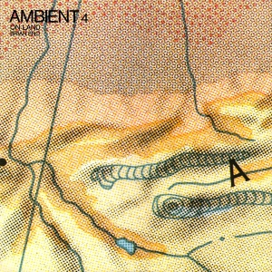

Ambient 4: On Land - My Favorite Ambient Album
posted 28/04/21

I have a... let's call it a "difficult" relationship with ambient albums. Of course I admire and respect the hell out of them, particularly Brian Eno's earliest works which brought the discussion of music's purpose to the forefront and experimented with what music could achieve. But most ambient albums, and ambience in general even in drone or post-rock pieces, is simply not for me.
I'm admittedly a very picky and impatient music listener, which tends to go against the very nature of ambience. Eno's ideas of making music equally interesting and ignorable relegate ambient music to the background; it's the most thoughtfully crafted and interesting background music ever, but it demands that I take initiative to engage with it. Other albums which rely on ambience and/or repetition, like many drone, post-rock, or even some IDM albums, are in a similar spot; I appreciate the emotions they evoke or the atmospheres they create, but they don't captivate me.
None of this is to discredit these albums I'm describing, it's all my fault. They simply demand I be in a certain headspace and inspect them layer by layer to unravel their greatness. But Ambient 4: On Land is different, it meets me halfway, it draws me in and remains dynamic and captivating throughout, and it takes me on a journey that no other ambient album does. I still have to put some work in to appreciate it fully, but the reward I get is more than just a general atmosphere or a meditative space, it's a full-blown journey. So let me take you on that journey to show why I love this album so much. (I find the best way to walk through this album is to relate each piece to an image or scene and go along on a journey. So if you haven't listened to this album yet, stop reading now and listen to it for yourself, I don't want to spoil your experience)
Ambient 4: On Land begins with "Lizard Point", which immediately introduces some quiet "chattering" (I really don't know how to describe these noises) to quickly let you know that you're not alone. ; here I imagine myself right outside the forest. An earthquake rolls in the distance and the chattering of animals is subtle, present enough to strike some anxiety, but still calm enough for the scene to remain tranquil and beautiful.
"The Lost Day" follows, and it's the longest track on the record. The journey through the forest has begun and the chimes present throughout the track have fully surround you. There is still a gentleness to the track, though it is arduous and cluttered with these chimes, and there is an air of anxiousness, the journey still remains relatively tranquil. The quaking from the previous tracks returns every now and then to exacerbate the tension present and introduce an imminent danger. While they certainly strike fear, they are few and far between, for now.
"Tal Coat" takes "The Lost Day" a step further, the gentle chimes are now replaced with glitchy blips that surround you even further, now drowning you in noise and further informing you that you're not alone. Where it previously felt like the animals were in the background, now they watching your every step. The earthquake rolls in a bit more frequently, and it booms louder and deeper than before. As you continue journeying on, the danger is now surely imminent.
I debated whether I should even call this album ambient, and "Shadow" is exactly why. "Shadow" cannot be ignored, it will try its best to creep you out and scare you with the demented vocals incorporated intro the track. Even in moments when the vocals fade, the atmosphere crafted is truly dark and oppressive, and you never know when Eno will frighten you next. In my journey through the forest, the animals' hisses seep out from pitch black, and I'm not sure if I'll make it out alive.
Soon we make it to "Lantern Marsh". The animals fade into the night to sleep, and I continue on. This track is perhaps the most "ambient" of any track here, as quietness emphasizes the impending earthquake which still threatens to roll over. This track perfectly captures the continuing, arduous journey and the bleakness that has now substituted the animal sounds from earlier. Though the animals aren't present, the anxiousness lingers on.
"Unfamiliar Wind (Leeks Hills)" continues on similarly, but we have shifted from the night to the early morning, captured through the birds now awake and honking about (I absolutely adore the bird recordings used here, they're just so weirdly perfect and a nice change from the typical elegant, tuneful chirps you usually hear recorded). The rolling of the earthquake doesn't pervade the track any longer, only present ever so often, and we slowly foreshadow the peace attained on the next track.
"A Clearing" is the typical calm, serene track that most would laud as a seminal piece of ambient work, so I shouldn't have to convince you of its brilliance. I wouldn't typically love this track, but here it's the ultimate payoff for the arduous, tension-filled journey we've been on. It's beautiful, subtle, and provides a nice space to simply relax. We've concluded our journey, and the reward is beautiful, though not obviously so. This isn't a track like "An Ending (Ascent)" where the swells of the instrumentation have you bursting with joy and accomplishment. The beauty is in the calmness and the instrumentation is relatively restrained, and in the context of the album, it's a masterful choice. One that took me a bit to appreciate, but a genius one nonetheless.
"Dunwich Beach, Autumn, 1960" is the least figurative track to me here, despite the clearly named setting in the track title. I see this as an epilogue, where we see the beautiful clearing now faded away with time, and the track longing for what once was. And though it isn't as intricate or figurative as everything else on this album, the sheer emotion that pours out of this track are what make it the best track on the album. The track is relatively simple, as it balances the notes which cling to the paradise that once was with the deep, low wails which mourn its loss. It's such a gut punch right after "A Clearing", to feel that the serene, tranquil clearing is now lost, and that the journey throughout the album can never be made again.
All in all, the way this album creates a journey, lets you peacefully bask in its reward, then takes it all away from you is impeccable. It all makes for an incredibly cohesive, captivating, and emotionally gripping work of art that, to me, stands as one of the most impressive feats for any electronic album, let alone any ambient work. This is certainly the ambient album for me.